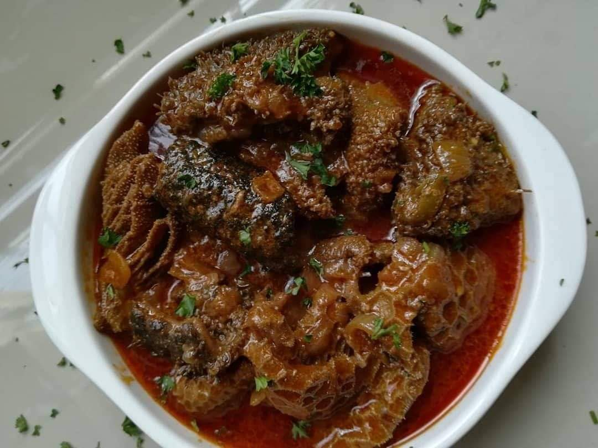
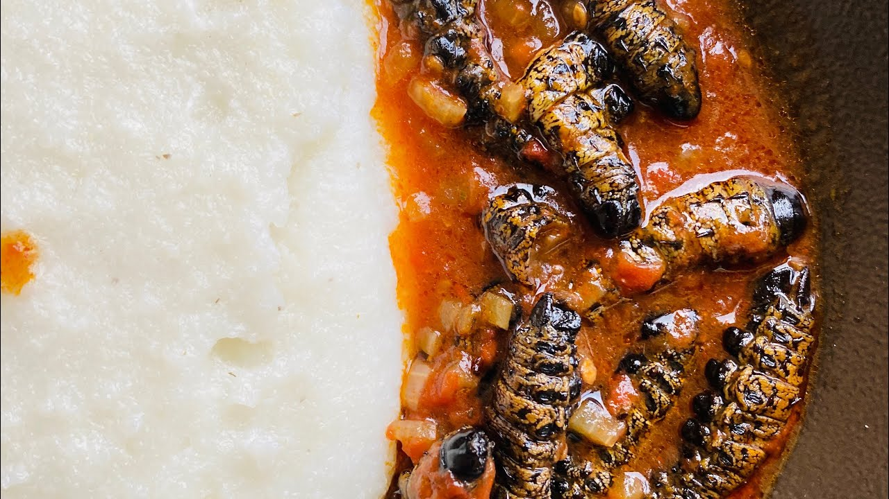

Mokgodu/Tripe
How To Prepare
Clean the tripe thoroughly under running water,
rubbing it well and soaking it in a vinegar-water mixture for 30 minutes before rinsing again.
Place the cleaned tripe in a large pot with enough water to cover it, adding beef cubes, bay leaf, and peppercorns if desired. Bring to a boil, then simmer for 2-3 hours until tender, adding water as needed.
In a separate pot, heat oil and sauté finely chopped onions and garlic until golden brown.
Stir in BBQ spice, paprika, and curry powder, cooking for a few minutes to release the flavors.
Drain the cooked tripe and add it to the spice mixture, stirring well to coat. Add some of the tripe cooking liquid to create a sauce and simmer for 10-15 minutes to meld the flavors.
Adjust seasoning with salt and pepper, and add a splash of vinegar or lemon juice if needed.
Serve hot,
Main Ingredients: Mogodu (Tripe)
Cleaned tripe (beef stomach)
Onion
Garlic
Salt
Black pepper
Stock cubes (beef)
Curry powder (optional)
Water

Skop/Cow Head
How To Prepare
Use garden scissors to trim thick fur. Burn the fur with a braai, flame torch, or burner to make it easier to scrape off with a knife or scouring pad.
Clean the head in cool water, ensuring all dirt and fur are removed. Rinse the mouth, ears, and tongue thoroughly.
Halve the head with an axe or butcher’s cleaver and remove the brain.
The meat is now ready for cooking.
Boil the meat on medium heat for about an hour until tender.
For a juicier result, cook for two hours. Season well with spices.
Dissolve two Knorrox stock cubes in boiling water and add to the pot for flavor.
Once tender, remove the meat from the broth.
Traditionally, it’s served on pap after being pulled off the bone, but you can grill it for a crispy texture.
For grilling, season with Knorrox Barbeque Spice and olive oil. Grill for 15 minutes until golden brown and crispy..
Main Ingredients: Skopho (Sheep Head)
Sheep head,Cow Head
Salt
Black pepper
Onion
Garlic
Stock cubes (optional)
Water

Pap
How To Prepare
Start by bringing water to a rolling boil,
then add a generous pinch of salt. Gradually stir in ACE SUPER MAIZE MEAL,
ensuring it's evenly dispersed to prevent lumps. Lower the heat and continue to cook the mixture over a gentle simmer,
stirring constantly with a wooden spoon. This process typically takes about 20 minutes,
during which the maize meal will gradually thicken and cook through.
For an extra layer of richness and flavor, you can add a knob of butter,
mixing it in thoroughly until it's well incorporated. The final consistency should be stiff and the maize meal fully cooked, achieving a smooth and firm texture that's perfect for serving.
Stir thoroughly to ensure even cooking and a consistent texture throughout.
Main Ingredients: Pap (Maize Meal)
Maize meal
Water
Salt

Mashonzha/Mopane Worms
How To Prepare
Soak dried mopane worms in hot water for 2 hours.
Drain, then simmer in boiling water for 20 minutes. Rinse and keep warm.
Heat oil, fry onion, garlic, and spice e.g raja until onion softens.
Add tomatoes and cook them for 5 minutes.
Mix soup minestrome for example with water, add to pan.
Stir in mopane worms, simmer for 10 minutes.
Serve goes along way with Pap.
Main Ingredients:Mashonzha/Mopane Worms
Mopane worms (dried or fresh)
Onion
Tomato
Garlic
Green pepper (optional)
Cooking oil
Salt
Water
Chili powder or curry powder (optional)

Chicken Feet
How To Prepare
To prepare a traditional South African chicken feet stew,
start by thoroughly cleaning the chicken feet, removing any yellow skin and trimming the nails.
In a large pot, heat a splash of oil and sauté onions, garlic, and a mix of your favorite spices,
such as curry powder, paprika, and ground coriander, until fragrant. Add the cleaned chicken feet to the pot,
stirring to coat them in the aromatic mixture. Pour in enough water or chicken broth to cover the feet,
then bring the mixture to a boil. Reduce the heat to a simmer and cook the chicken feet for about 45 minutes to an hour,
or until they are tender and the flavors have melded together. Add diced tomatoes, potatoes, or other vegetables, if desired, and continue cooking until the vegetables are tender.
Season with salt and pepper to taste.
Serve the stew hot, garnished with fresh herbs, alongside rice or pap for a hearty and flavorful meal.
Main Ingredients:Chicken Feet
Chicken feet (cleaned)
Onion
Garlic
Salt
Black pepper
Curry powder or seasoning
Water

Beef Stew
How To Prepare
Heat olive oil in a large stockpot over medium heat.
Season steak with salt and pepper, then cook in batches until browned, about 6-8 minutes. Set aside.
Add onion, carrots, and celery to the pot and cook until tender, about 3-4 minutes.
Then add garlic and mushrooms, cooking until browned and tender, about 3-4 minutes more.
Whisk in flour and tomato paste until lightly browned, about 1 minute. Stir in wine, scraping up any browned bits, followed by beef stock, thyme, bay leaves, and the steak. Bring to a boil, then reduce heat and simmer until the beef is very tender, about 30 minutes.
Add potatoes and simmer until they are tender and the stew has thickened, about 20 minutes.
Discard thyme and bay leaves, then stir in parsley. Season with salt and pepper to taste.
Serve immediately.
Main Ingredients:Beef Stew
Beef stew meat (chunks)
Onion
Garlic
Carrots
Potatoes
Tomatoes or tomato paste
Beef stock or broth
Salt
Black pepper
Cooking oil
Bay leaves
Thyme or rosemary (optional)